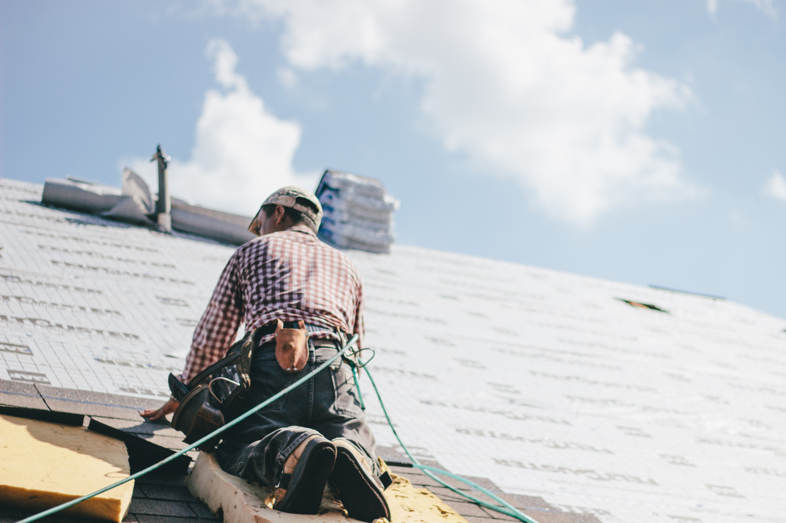
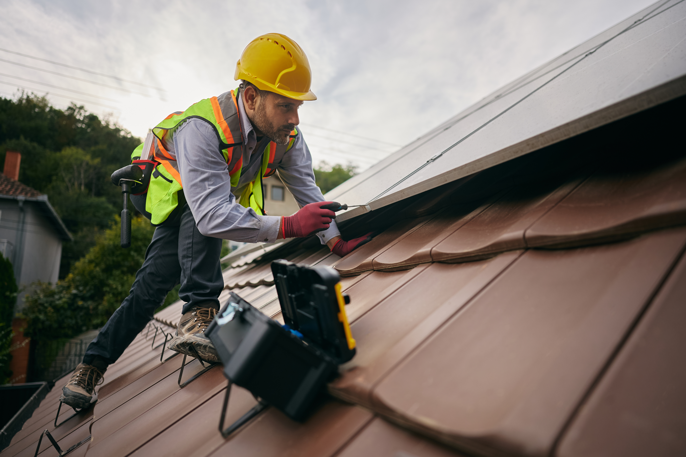
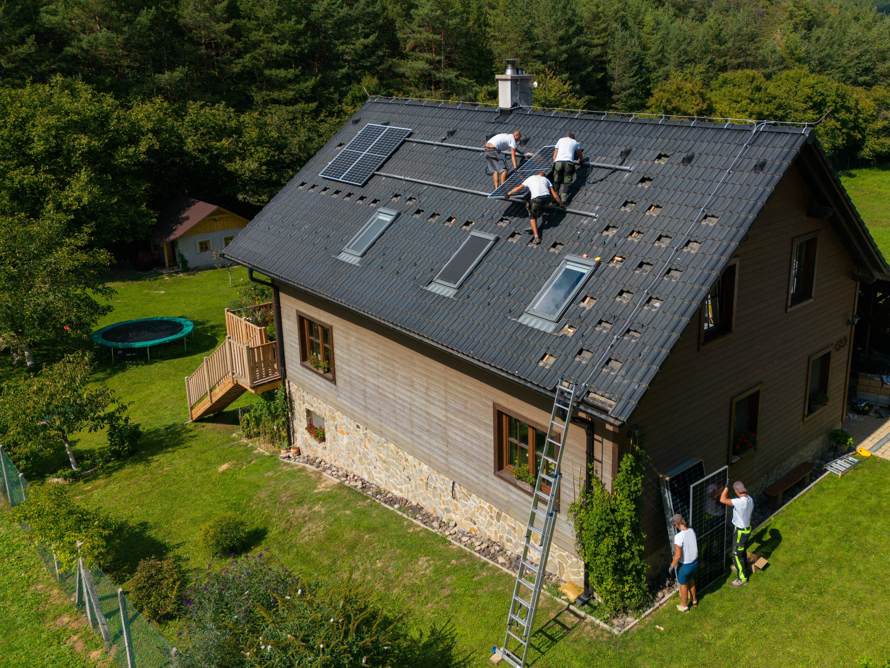
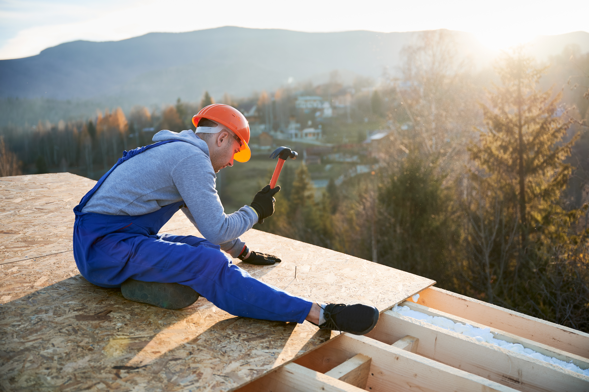

Our roofing installation in Newport, OR begins with an onsite evaluation, where we discuss your project, review the condition of the property, and explain the available roofing options.

Residential roofing
Every roofing installation project is different because every property has its own design, roofing history, and project goals. We install complete residential roofing systems for homeowners replacing an existing roof as well as new-construction homes that require a professionally installed roofing system from the beginning.
A complete roof installation includes much more than placing new roofing materials on the structure. We evaluate the project, discuss suitable roof systems, establish the agreed scope of work, and complete the installation according to the project’s requirements. While residential roofing services remain our primary focus, we also complete select commercial roofing projects when they align with our services.
Roof inspection
There are several reasons why a property owner may begin considering a new roof system. Some roofs have reached a point where age and ongoing wear make larger improvements worth discussing. Others may have recurring roofing concerns or previous installation issues that continue to affect the roofing system over time.
New-construction homes may also require complete asphalt roof installation, while existing homes with widespread deterioration may benefit from asphalt roof replacement or, in some cases, flat roof replacement depending on the roofing system.
Although these situations may indicate that a new roof deserves consideration, they do not automatically determine the appropriate solution. Every recommendation begins with an onsite evaluation of the roofing system.
After inspecting the roof, we explain our observations, discuss metal roofing options and other suitable materials when appropriate, and determine if continued roofing maintenance remains practical or if a new installation better reflects the property’s condition and your project goals.

Honest guidance
Successful roofing installation starts with understanding the property before work begins. During our onsite evaluation, we review the roofing system, discuss your goals, and gather the information needed to recommend an installation approach that matches the project. Rather than applying the same solution to every home, we prepare recommendations based on the property’s individual requirements.
Once the project scope has been discussed, we work with you to select appropriate roofing materials and establish an agreed plan for the installation. Throughout the project, we focus on careful workmanship and clear communication so you understand what is happening at each stage.

Roof systems
The right roofing system depends on several factors, including the property’s design, the existing roof when applicable, project goals, and the weather conditions common along the Oregon Coast. During the planning process, we discuss the available roofing systems and explain which options best fit your project before installation begins.
For many residential properties, asphalt and composition roofing systems remain suitable options that can be customized during the planning process.
For many residential properties, asphalt and composition roofing systems remain suitable options that can be customized during the planning process.
Rather than recommending one material for every installation, we evaluate the property first and discuss the roofing system that best aligns with the project’s goals and coastal conditions.
Inspection & Maintenance
Every roofing installation project begins with an onsite visit to better understand the property and your goals. We evaluate the existing roof or new construction project, discuss the roofing system you are considering, and explain the options that fit your needs. Based on our findings, we prepare a project-specific estimate that outlines the agreed scope of work before installation begins.
01
After the project details have been approved, we coordinate scheduling and prepare for the installation. When replacing an existing roof, we remove the current roofing materials as appropriate before preparing the roof for the new system.
During this stage, we review the exposed roof deck and address project-specific conditions that may need attention before installation continues. Once preparation is complete, we install the selected roofing system using careful workmanship throughout each phase of the project.
02
Once installation is complete, we review the finished roofing system to confirm the work reflects the agreed project scope. We also complete a thorough cleanup of the property, remove roofing debris, and use magnetic equipment to help collect nails around the work area. Before the project concludes, we perform a final inspection so you have an opportunity to review the completed installation with us.
03
Coastal installation
Roofing projects along the Oregon Coast require thoughtful planning because recurring wind, rain, and moisture can influence material selection and installation decisions. Our experience working on coastal properties helps us recommend roofing systems that suit the project’s requirements while considering the conditions common throughout the area.
We use quality roofing materials selected for each project and incorporate stainless steel fasteners and stainless-steel flashing components where appropriate. Every installation is planned according to the property’s specific needs, allowing us to complete each project with careful workmanship instead of applying the same approach to every home.

Getting started
Before installation starts, we review the agreed scope of work, discuss the selected roofing materials, and explain the planned scheduling for your project. We also talk through property access and any project-specific preparations that may be needed before work begins. Taking time to review these details helps create a clear understanding of the installation process and allows your roofing project to move forward with confidence.
Get in touch
If you are planning a new roof for your home or a new construction project, we are ready to help. Contact us to schedule an onsite evaluation, discuss your roofing goals, and learn more about the installation options that best fit your property and project.
FAQ’s
Every project begins with an onsite inspection and project planning. Depending on the property, the scope may include material selection, project-specific preparation, removal when applicable, installation, a final inspection, and thorough cleanup.
Answer copy not supplied in the Figma design — add it here.
Answer copy not supplied in the Figma design — add it here.
Answer copy not supplied in the Figma design — add it here.
Answer copy not supplied in the Figma design — add it here.